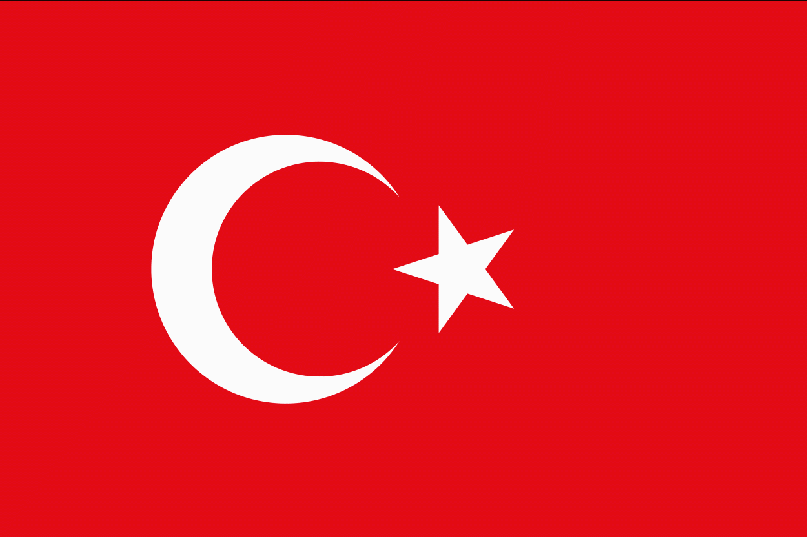
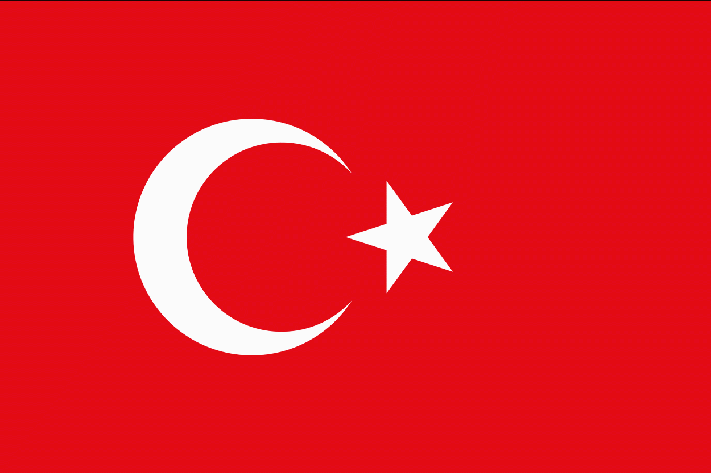

Om bageriget
Vi er et arabisk bageri, som har base i Danmark. Vores brød er lavet fuldstændig på samme måde, som man ville gøre i Istanbul. Hvis du har holdt ferie i Tyrkiet, har du helt sikkert smagt tyrkiske brød. Et kendetegn ved tyrkiske brød er, at det altid er friskbagt.
Vores dygtige team, som består af syv dedikeret medarbejder, står tidligt op hverdag og gør deres allerbedste for at lave det bedste brød.
Vores butik ligger i Bazar Vest, som er placeret i Aarhus området. Til dem der ikke kender Bazar Vest, så er det et kæmpe stort marked. Hvor der er masser af forskellige butikker fra alle mulige nationaliteter. Det skaber utrolig meget liv og en speciel stemning,
som er med til at gøre et besøg hos Bazar Vest til en oplevelse.


 
